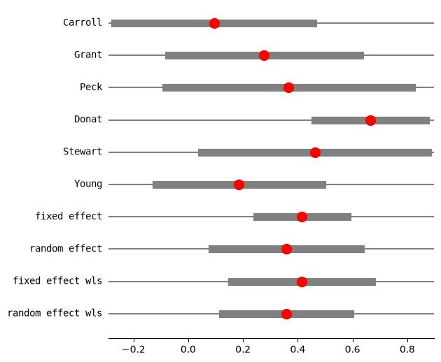
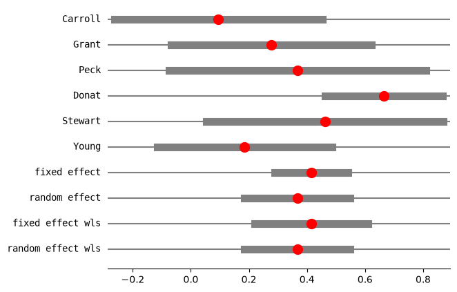
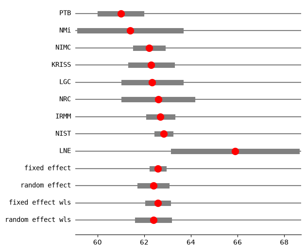
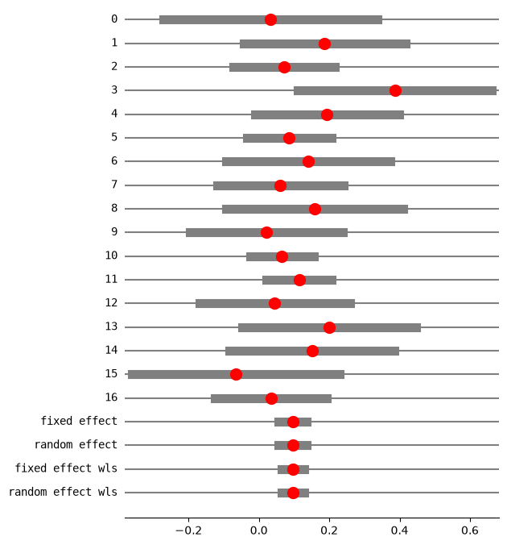
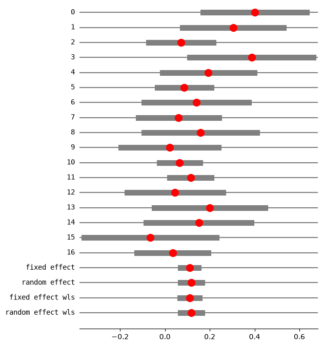

Meta-Analysis in statsmodels#
Statsmodels include basic methods for meta-analysis. This notebook illustrates the current usage.
Status: The results have been verified against R meta and metafor packages. However, the API is still experimental and will still change. Some options for additional methods that are available in R meta and metafor are missing.
The support for meta-analysis has 3 parts:
effect size functions: this currently includes
effectsize_smdcomputes effect size and their standard errors for standardized mean difference,effectsize_2proportionscomputes effect sizes for comparing two independent proportions using risk difference, (log) risk ratio, (log) odds-ratio or arcsine square root transformationThe
combine_effectscomputes fixed and random effects estimate for the overall mean or effect. The returned results instance includes a forest plot function.helper functions to estimate the random effect variance, tau-squared
The estimate of the overall effect size in combine_effects can also be performed using WLS or GLM with var_weights.
Finally, the meta-analysis functions currently do not include the Mantel-Hanszel method. However, the fixed effects results can be computed directly using StratifiedTable as illustrated below.
[1]:
%matplotlib inline
[2]:
import numpy as np
import pandas as pd
from scipy import stats, optimize
from statsmodels.regression.linear_model import WLS
from statsmodels.genmod.generalized_linear_model import GLM
from statsmodels.stats.meta_analysis import (
effectsize_smd,
effectsize_2proportions,
combine_effects,
_fit_tau_iterative,
_fit_tau_mm,
_fit_tau_iter_mm,
)
# increase line length for pandas
pd.set_option("display.width", 100)
Example#
[3]:
data = [
["Carroll", 94, 22, 60, 92, 20, 60],
["Grant", 98, 21, 65, 92, 22, 65],
["Peck", 98, 28, 40, 88, 26, 40],
["Donat", 94, 19, 200, 82, 17, 200],
["Stewart", 98, 21, 50, 88, 22, 45],
["Young", 96, 21, 85, 92, 22, 85],
]
colnames = ["study", "mean_t", "sd_t", "n_t", "mean_c", "sd_c", "n_c"]
rownames = [i[0] for i in data]
dframe1 = pd.DataFrame(data, columns=colnames)
rownames
[3]:
['Carroll', 'Grant', 'Peck', 'Donat', 'Stewart', 'Young']
[4]:
mean2, sd2, nobs2, mean1, sd1, nobs1 = np.asarray(
dframe1[["mean_t", "sd_t", "n_t", "mean_c", "sd_c", "n_c"]]
).T
rownames = dframe1["study"]
rownames.tolist()
[4]:
['Carroll', 'Grant', 'Peck', 'Donat', 'Stewart', 'Young']
[5]:
np.array(nobs1 + nobs2)
[5]:
array([120, 130, 80, 400, 95, 170])
estimate effect size standardized mean difference#
[6]:
eff, var_eff = effectsize_smd(mean2, sd2, nobs2, mean1, sd1, nobs1)
Using one-step chi2, DerSimonian-Laird estimate for random effects variance tau#
Method option for random effect method_re="chi2" or method_re="dl", both names are accepted. This is commonly referred to as the DerSimonian-Laird method, it is based on a moment estimator based on pearson chi2 from the fixed effects estimate.
[7]:
res3 = combine_effects(eff, var_eff, method_re="chi2", use_t=True, row_names=rownames)
# TODO: we still need better information about conf_int of individual samples
# We don't have enough information in the model for individual confidence intervals
# if those are not based on normal distribution.
res3.conf_int_samples(nobs=np.array(nobs1 + nobs2))
print(res3.summary_frame())
eff sd_eff ci_low ci_upp w_fe w_re
Carroll 0.094524 0.182680 -0.267199 0.456248 0.123885 0.157529
Grant 0.277356 0.176279 -0.071416 0.626129 0.133045 0.162828
Peck 0.366546 0.225573 -0.082446 0.815538 0.081250 0.126223
Donat 0.664385 0.102748 0.462389 0.866381 0.391606 0.232734
Stewart 0.461808 0.208310 0.048203 0.875413 0.095275 0.137949
Young 0.185165 0.153729 -0.118312 0.488641 0.174939 0.182736
fixed effect 0.414961 0.064298 0.249677 0.580245 1.000000 NaN
random effect 0.358486 0.105462 0.087388 0.629583 NaN 1.000000
fixed effect wls 0.414961 0.099237 0.159864 0.670058 1.000000 NaN
random effect wls 0.358486 0.090328 0.126290 0.590682 NaN 1.000000
[8]:
res3.cache_ci
[8]:
{(0.05,
True): (array([-0.26719942, -0.07141628, -0.08244568, 0.46238908, 0.04820269,
-0.1183121 ]), array([0.45624817, 0.62612908, 0.81553838, 0.86638112, 0.87541326,
0.48864139]))}
[9]:
res3.method_re
[9]:
'chi2'
[10]:
fig = res3.plot_forest()
fig.set_figheight(6)
fig.set_figwidth(6)

[11]:
res3 = combine_effects(eff, var_eff, method_re="chi2", use_t=False, row_names=rownames)
# TODO: we still need better information about conf_int of individual samples
# We don't have enough information in the model for individual confidence intervals
# if those are not based on normal distribution.
res3.conf_int_samples(nobs=np.array(nobs1 + nobs2))
print(res3.summary_frame())
eff sd_eff ci_low ci_upp w_fe w_re
Carroll 0.094524 0.182680 -0.263521 0.452570 0.123885 0.157529
Grant 0.277356 0.176279 -0.068144 0.622857 0.133045 0.162828
Peck 0.366546 0.225573 -0.075569 0.808662 0.081250 0.126223
Donat 0.664385 0.102748 0.463002 0.865768 0.391606 0.232734
Stewart 0.461808 0.208310 0.053527 0.870089 0.095275 0.137949
Young 0.185165 0.153729 -0.116139 0.486468 0.174939 0.182736
fixed effect 0.414961 0.064298 0.288939 0.540984 1.000000 NaN
random effect 0.358486 0.105462 0.151785 0.565187 NaN 1.000000
fixed effect wls 0.414961 0.099237 0.220460 0.609462 1.000000 NaN
random effect wls 0.358486 0.090328 0.181446 0.535526 NaN 1.000000
Using iterated, Paule-Mandel estimate for random effects variance tau#
The method commonly referred to as Paule-Mandel estimate is a method of moment estimate for the random effects variance that iterates between mean and variance estimate until convergence.
[12]:
res4 = combine_effects(
eff, var_eff, method_re="iterated", use_t=False, row_names=rownames
)
res4_df = res4.summary_frame()
print("method RE:", res4.method_re)
print(res4.summary_frame())
fig = res4.plot_forest()
method RE: iterated
eff sd_eff ci_low ci_upp w_fe w_re
Carroll 0.094524 0.182680 -0.263521 0.452570 0.123885 0.152619
Grant 0.277356 0.176279 -0.068144 0.622857 0.133045 0.159157
Peck 0.366546 0.225573 -0.075569 0.808662 0.081250 0.116228
Donat 0.664385 0.102748 0.463002 0.865768 0.391606 0.257767
Stewart 0.461808 0.208310 0.053527 0.870089 0.095275 0.129428
Young 0.185165 0.153729 -0.116139 0.486468 0.174939 0.184799
fixed effect 0.414961 0.064298 0.288939 0.540984 1.000000 NaN
random effect 0.366419 0.092390 0.185338 0.547500 NaN 1.000000
fixed effect wls 0.414961 0.099237 0.220460 0.609462 1.000000 NaN
random effect wls 0.366419 0.092390 0.185338 0.547500 NaN 1.000000

[ ]:
Example Kacker interlaboratory mean#
In this example the effect size is the mean of measurements in a lab. We combine the estimates from several labs to estimate and overall average.
[13]:
eff = np.array([61.00, 61.40, 62.21, 62.30, 62.34, 62.60, 62.70, 62.84, 65.90])
var_eff = np.array(
[0.2025, 1.2100, 0.0900, 0.2025, 0.3844, 0.5625, 0.0676, 0.0225, 1.8225]
)
rownames = ["PTB", "NMi", "NIMC", "KRISS", "LGC", "NRC", "IRMM", "NIST", "LNE"]
[14]:
res2_DL = combine_effects(eff, var_eff, method_re="dl", use_t=True, row_names=rownames)
print("method RE:", res2_DL.method_re)
print(res2_DL.summary_frame())
fig = res2_DL.plot_forest()
fig.set_figheight(6)
fig.set_figwidth(6)
method RE: dl
eff sd_eff ci_low ci_upp w_fe w_re
PTB 61.000000 0.450000 60.118016 61.881984 0.057436 0.123113
NMi 61.400000 1.100000 59.244040 63.555960 0.009612 0.040314
NIMC 62.210000 0.300000 61.622011 62.797989 0.129230 0.159749
KRISS 62.300000 0.450000 61.418016 63.181984 0.057436 0.123113
LGC 62.340000 0.620000 61.124822 63.555178 0.030257 0.089810
NRC 62.600000 0.750000 61.130027 64.069973 0.020677 0.071005
IRMM 62.700000 0.260000 62.190409 63.209591 0.172052 0.169810
NIST 62.840000 0.150000 62.546005 63.133995 0.516920 0.194471
LNE 65.900000 1.350000 63.254049 68.545951 0.006382 0.028615
fixed effect 62.583397 0.107846 62.334704 62.832090 1.000000 NaN
random effect 62.390139 0.245750 61.823439 62.956838 NaN 1.000000
fixed effect wls 62.583397 0.189889 62.145512 63.021282 1.000000 NaN
random effect wls 62.390139 0.294776 61.710384 63.069893 NaN 1.000000
/opt/hostedtoolcache/Python/3.14.6/x64/lib/python3.14/site-packages/statsmodels/stats/meta_analysis.py:224: InvalidTestWarning: `use_t=True` requires `nobs` for each sample or `ci_func`. Using normal distribution for confidence interval of individual samples.
ci_low, ci_upp = self.conf_int_samples(alpha=alpha, use_t=use_t)

[15]:
res2_PM = combine_effects(eff, var_eff, method_re="pm", use_t=True, row_names=rownames)
print("method RE:", res2_PM.method_re)
print(res2_PM.summary_frame())
fig = res2_PM.plot_forest()
fig.set_figheight(6)
fig.set_figwidth(6)
method RE: pm
eff sd_eff ci_low ci_upp w_fe w_re
PTB 61.000000 0.450000 60.118016 61.881984 0.057436 0.125857
NMi 61.400000 1.100000 59.244040 63.555960 0.009612 0.059656
NIMC 62.210000 0.300000 61.622011 62.797989 0.129230 0.143658
KRISS 62.300000 0.450000 61.418016 63.181984 0.057436 0.125857
LGC 62.340000 0.620000 61.124822 63.555178 0.030257 0.104850
NRC 62.600000 0.750000 61.130027 64.069973 0.020677 0.090122
IRMM 62.700000 0.260000 62.190409 63.209591 0.172052 0.147821
NIST 62.840000 0.150000 62.546005 63.133995 0.516920 0.156980
LNE 65.900000 1.350000 63.254049 68.545951 0.006382 0.045201
fixed effect 62.583397 0.107846 62.334704 62.832090 1.000000 NaN
random effect 62.407620 0.338030 61.628120 63.187119 NaN 1.000000
fixed effect wls 62.583397 0.189889 62.145512 63.021282 1.000000 NaN
random effect wls 62.407620 0.338030 61.628120 63.187120 NaN 1.000000
/opt/hostedtoolcache/Python/3.14.6/x64/lib/python3.14/site-packages/statsmodels/stats/meta_analysis.py:224: InvalidTestWarning: `use_t=True` requires `nobs` for each sample or `ci_func`. Using normal distribution for confidence interval of individual samples.
ci_low, ci_upp = self.conf_int_samples(alpha=alpha, use_t=use_t)
[ ]:
Meta-analysis of proportions#
In the following example the random effect variance tau is estimated to be zero. I then change two counts in the data, so the second example has random effects variance greater than zero.
[16]:
import io
[17]:
ss = """\
study,nei,nci,e1i,c1i,e2i,c2i,e3i,c3i,e4i,c4i
1,19,22,16.0,20.0,11,12,4.0,8.0,4,3
2,34,35,22.0,22.0,18,12,15.0,8.0,15,6
3,72,68,44.0,40.0,21,15,10.0,3.0,3,0
4,22,20,19.0,12.0,14,5,5.0,4.0,2,3
5,70,32,62.0,27.0,42,13,26.0,6.0,15,5
6,183,94,130.0,65.0,80,33,47.0,14.0,30,11
7,26,50,24.0,30.0,13,18,5.0,10.0,3,9
8,61,55,51.0,44.0,37,30,19.0,19.0,11,15
9,36,25,30.0,17.0,23,12,13.0,4.0,10,4
10,45,35,43.0,35.0,19,14,8.0,4.0,6,0
11,246,208,169.0,139.0,106,76,67.0,42.0,51,35
12,386,141,279.0,97.0,170,46,97.0,21.0,73,8
13,59,32,56.0,30.0,34,17,21.0,9.0,20,7
14,45,15,42.0,10.0,18,3,9.0,1.0,9,1
15,14,18,14.0,18.0,13,14,12.0,13.0,9,12
16,26,19,21.0,15.0,12,10,6.0,4.0,5,1
17,74,75,,,42,40,,,23,30"""
df3 = pd.read_csv(io.StringIO(ss))
df_12y = df3[["e2i", "nei", "c2i", "nci"]]
# TODO: currently 1 is reference, switch labels
count1, nobs1, count2, nobs2 = df_12y.values.T
dta = df_12y.values.T
[18]:
eff, var_eff = effectsize_2proportions(*dta, statistic="rd")
[19]:
eff, var_eff
[19]:
(array([ 0.03349282, 0.18655462, 0.07107843, 0.38636364, 0.19375 ,
0.08609464, 0.14 , 0.06110283, 0.15888889, 0.02222222,
0.06550969, 0.11417337, 0.04502119, 0.2 , 0.15079365,
-0.06477733, 0.03423423]),
array([0.02409958, 0.01376482, 0.00539777, 0.01989341, 0.01096641,
0.00376814, 0.01422338, 0.00842011, 0.01639261, 0.01227827,
0.00211165, 0.00219739, 0.01192067, 0.016 , 0.0143398 ,
0.02267994, 0.0066352 ]))
[20]:
res5 = combine_effects(
eff, var_eff, method_re="iterated", use_t=False
) # , row_names=rownames)
res5_df = res5.summary_frame()
print("method RE:", res5.method_re)
print("RE variance tau2:", res5.tau2)
print(res5.summary_frame())
fig = res5.plot_forest()
fig.set_figheight(8)
fig.set_figwidth(6)
method RE: iterated
RE variance tau2: 0
eff sd_eff ci_low ci_upp w_fe w_re
0 0.033493 0.155240 -0.270773 0.337758 0.017454 0.017454
1 0.186555 0.117324 -0.043395 0.416505 0.030559 0.030559
2 0.071078 0.073470 -0.072919 0.215076 0.077928 0.077928
3 0.386364 0.141044 0.109922 0.662805 0.021145 0.021145
4 0.193750 0.104721 -0.011499 0.398999 0.038357 0.038357
5 0.086095 0.061385 -0.034218 0.206407 0.111630 0.111630
6 0.140000 0.119262 -0.093749 0.373749 0.029574 0.029574
7 0.061103 0.091761 -0.118746 0.240951 0.049956 0.049956
8 0.158889 0.128034 -0.092052 0.409830 0.025660 0.025660
9 0.022222 0.110807 -0.194956 0.239401 0.034259 0.034259
10 0.065510 0.045953 -0.024556 0.155575 0.199199 0.199199
11 0.114173 0.046876 0.022297 0.206049 0.191426 0.191426
12 0.045021 0.109182 -0.168971 0.259014 0.035286 0.035286
13 0.200000 0.126491 -0.047918 0.447918 0.026290 0.026290
14 0.150794 0.119749 -0.083910 0.385497 0.029334 0.029334
15 -0.064777 0.150599 -0.359945 0.230390 0.018547 0.018547
16 0.034234 0.081457 -0.125418 0.193887 0.063395 0.063395
fixed effect 0.096212 0.020509 0.056014 0.136410 1.000000 NaN
random effect 0.096212 0.020509 0.056014 0.136410 NaN 1.000000
fixed effect wls 0.096212 0.016521 0.063831 0.128593 1.000000 NaN
random effect wls 0.096212 0.016521 0.063831 0.128593 NaN 1.000000

changing data to have positive random effects variance#
[21]:
dta_c = dta.copy()
dta_c.T[0, 0] = 18
dta_c.T[1, 0] = 22
dta_c.T
[21]:
array([[ 18, 19, 12, 22],
[ 22, 34, 12, 35],
[ 21, 72, 15, 68],
[ 14, 22, 5, 20],
[ 42, 70, 13, 32],
[ 80, 183, 33, 94],
[ 13, 26, 18, 50],
[ 37, 61, 30, 55],
[ 23, 36, 12, 25],
[ 19, 45, 14, 35],
[106, 246, 76, 208],
[170, 386, 46, 141],
[ 34, 59, 17, 32],
[ 18, 45, 3, 15],
[ 13, 14, 14, 18],
[ 12, 26, 10, 19],
[ 42, 74, 40, 75]])
[22]:
eff, var_eff = effectsize_2proportions(*dta_c, statistic="rd")
res5 = combine_effects(
eff, var_eff, method_re="iterated", use_t=False
) # , row_names=rownames)
res5_df = res5.summary_frame()
print("method RE:", res5.method_re)
print(res5.summary_frame())
fig = res5.plot_forest()
fig.set_figheight(8)
fig.set_figwidth(6)
method RE: iterated
eff sd_eff ci_low ci_upp w_fe w_re
0 0.401914 0.117873 0.170887 0.632940 0.029850 0.038415
1 0.304202 0.114692 0.079410 0.528993 0.031529 0.040258
2 0.071078 0.073470 -0.072919 0.215076 0.076834 0.081017
3 0.386364 0.141044 0.109922 0.662805 0.020848 0.028013
4 0.193750 0.104721 -0.011499 0.398999 0.037818 0.046915
5 0.086095 0.061385 -0.034218 0.206407 0.110063 0.102907
6 0.140000 0.119262 -0.093749 0.373749 0.029159 0.037647
7 0.061103 0.091761 -0.118746 0.240951 0.049255 0.058097
8 0.158889 0.128034 -0.092052 0.409830 0.025300 0.033270
9 0.022222 0.110807 -0.194956 0.239401 0.033778 0.042683
10 0.065510 0.045953 -0.024556 0.155575 0.196403 0.141871
11 0.114173 0.046876 0.022297 0.206049 0.188739 0.139144
12 0.045021 0.109182 -0.168971 0.259014 0.034791 0.043759
13 0.200000 0.126491 -0.047918 0.447918 0.025921 0.033985
14 0.150794 0.119749 -0.083910 0.385497 0.028922 0.037383
15 -0.064777 0.150599 -0.359945 0.230390 0.018286 0.024884
16 0.034234 0.081457 -0.125418 0.193887 0.062505 0.069751
fixed effect 0.110252 0.020365 0.070337 0.150167 1.000000 NaN
random effect 0.117633 0.024913 0.068804 0.166463 NaN 1.000000
fixed effect wls 0.110252 0.022289 0.066567 0.153937 1.000000 NaN
random effect wls 0.117633 0.024913 0.068804 0.166463 NaN 1.000000

[23]:
res5 = combine_effects(eff, var_eff, method_re="chi2", use_t=False)
res5_df = res5.summary_frame()
print("method RE:", res5.method_re)
print(res5.summary_frame())
fig = res5.plot_forest()
fig.set_figheight(8)
fig.set_figwidth(6)
method RE: chi2
eff sd_eff ci_low ci_upp w_fe w_re
0 0.401914 0.117873 0.170887 0.632940 0.029850 0.036114
1 0.304202 0.114692 0.079410 0.528993 0.031529 0.037940
2 0.071078 0.073470 -0.072919 0.215076 0.076834 0.080779
3 0.386364 0.141044 0.109922 0.662805 0.020848 0.025973
4 0.193750 0.104721 -0.011499 0.398999 0.037818 0.044614
5 0.086095 0.061385 -0.034218 0.206407 0.110063 0.105901
6 0.140000 0.119262 -0.093749 0.373749 0.029159 0.035356
7 0.061103 0.091761 -0.118746 0.240951 0.049255 0.056098
8 0.158889 0.128034 -0.092052 0.409830 0.025300 0.031063
9 0.022222 0.110807 -0.194956 0.239401 0.033778 0.040357
10 0.065510 0.045953 -0.024556 0.155575 0.196403 0.154854
11 0.114173 0.046876 0.022297 0.206049 0.188739 0.151236
12 0.045021 0.109182 -0.168971 0.259014 0.034791 0.041435
13 0.200000 0.126491 -0.047918 0.447918 0.025921 0.031761
14 0.150794 0.119749 -0.083910 0.385497 0.028922 0.035095
15 -0.064777 0.150599 -0.359945 0.230390 0.018286 0.022976
16 0.034234 0.081457 -0.125418 0.193887 0.062505 0.068449
fixed effect 0.110252 0.020365 0.070337 0.150167 1.000000 NaN
random effect 0.115580 0.023557 0.069410 0.161751 NaN 1.000000
fixed effect wls 0.110252 0.022289 0.066567 0.153937 1.000000 NaN
random effect wls 0.115580 0.024241 0.068068 0.163093 NaN 1.000000
Replicate fixed effect analysis using GLM with var_weights#
combine_effects computes weighted average estimates which can be replicated using GLM with var_weights or with WLS. The scale option in GLM.fit can be used to replicate fixed meta-analysis with fixed and with HKSJ/WLS scale
[24]:
from statsmodels.genmod.generalized_linear_model import GLM
[25]:
eff, var_eff = effectsize_2proportions(*dta_c, statistic="or")
res = combine_effects(eff, var_eff, method_re="chi2", use_t=False)
res_frame = res.summary_frame()
print(res_frame.iloc[-4:])
eff sd_eff ci_low ci_upp w_fe w_re
fixed effect 0.428037 0.090287 0.251076 0.604997 1.0 NaN
random effect 0.429520 0.091377 0.250425 0.608615 NaN 1.0
fixed effect wls 0.428037 0.090798 0.250076 0.605997 1.0 NaN
random effect wls 0.429520 0.091595 0.249997 0.609044 NaN 1.0
We need to fix scale=1 in order to replicate standard errors for the usual meta-analysis.
[26]:
weights = 1 / var_eff
mod_glm = GLM(eff, np.ones(len(eff)), var_weights=weights)
res_glm = mod_glm.fit(scale=1.0)
print(res_glm.summary().tables[1])
==============================================================================
coef std err z P>|z| [0.025 0.975]
------------------------------------------------------------------------------
const 0.4280 0.090 4.741 0.000 0.251 0.605
==============================================================================
[27]:
# check results
res_glm.scale, res_glm.conf_int() - res_frame.loc[
"fixed effect", ["ci_low", "ci_upp"]
].values
[27]:
(array(1.), array([[-5.55111512e-17, 0.00000000e+00]]))
Using HKSJ variance adjustment in meta-analysis is equivalent to estimating the scale using pearson chi2, which is also the default for the gaussian family.
[28]:
res_glm = mod_glm.fit(scale="x2")
print(res_glm.summary().tables[1])
==============================================================================
coef std err z P>|z| [0.025 0.975]
------------------------------------------------------------------------------
const 0.4280 0.091 4.714 0.000 0.250 0.606
==============================================================================
[29]:
# check results
res_glm.scale, res_glm.conf_int() - res_frame.loc[
"fixed effect", ["ci_low", "ci_upp"]
].values
[29]:
(np.float64(1.0113358914264383), array([[-0.00100017, 0.00100017]]))
Mantel-Hanszel odds-ratio using contingency tables#
The fixed effect for the log-odds-ratio using the Mantel-Hanszel can be directly computed using StratifiedTable.
We need to create a 2 x 2 x k contingency table to be used with StratifiedTable.
[30]:
t, nt, c, nc = dta_c
counts = np.column_stack([t, nt - t, c, nc - c])
ctables = counts.T.reshape(2, 2, -1)
ctables[:, :, 0]
[30]:
array([[18, 1],
[12, 10]])
[31]:
counts[0]
[31]:
array([18, 1, 12, 10])
[32]:
dta_c.T[0]
[32]:
array([18, 19, 12, 22])
[33]:
import statsmodels.stats.api as smstats
[34]:
st = smstats.StratifiedTable(ctables.astype(np.float64))
compare pooled log-odds-ratio and standard error to R meta package
[35]:
st.logodds_pooled, st.logodds_pooled - 0.4428186730553189 # R meta
[35]:
(np.float64(0.4428186730553187), np.float64(-2.220446049250313e-16))
[36]:
st.logodds_pooled_se, st.logodds_pooled_se - 0.08928560091027186 # R meta
[36]:
(np.float64(0.08928560091027186), np.float64(0.0))
[37]:
st.logodds_pooled_confint()
[37]:
(np.float64(0.2678221109331691), np.float64(0.6178152351774683))
[38]:
print(st.test_equal_odds())
pvalue 0.34496419319878724
statistic 17.64707987033203
[39]:
print(st.test_null_odds())
pvalue 6.615053645964153e-07
statistic 24.724136624311814
check conversion to stratified contingency table
Row sums of each table are the sample sizes for treatment and control experiments
[40]:
ctables.sum(1)
[40]:
array([[ 19, 34, 72, 22, 70, 183, 26, 61, 36, 45, 246, 386, 59,
45, 14, 26, 74],
[ 22, 35, 68, 20, 32, 94, 50, 55, 25, 35, 208, 141, 32,
15, 18, 19, 75]])
[41]:
nt, nc
[41]:
(array([ 19, 34, 72, 22, 70, 183, 26, 61, 36, 45, 246, 386, 59,
45, 14, 26, 74]),
array([ 22, 35, 68, 20, 32, 94, 50, 55, 25, 35, 208, 141, 32,
15, 18, 19, 75]))
Results from R meta package
> res_mb_hk = metabin(e2i, nei, c2i, nci, data=dat2, sm="OR", Q.Cochrane=FALSE, method="MH", method.tau="DL", hakn=FALSE, backtransf=FALSE)
> res_mb_hk
logOR 95%-CI %W(fixed) %W(random)
1 2.7081 [ 0.5265; 4.8896] 0.3 0.7
2 1.2567 [ 0.2658; 2.2476] 2.1 3.2
3 0.3749 [-0.3911; 1.1410] 5.4 5.4
4 1.6582 [ 0.3245; 2.9920] 0.9 1.8
5 0.7850 [-0.0673; 1.6372] 3.5 4.4
6 0.3617 [-0.1528; 0.8762] 12.1 11.8
7 0.5754 [-0.3861; 1.5368] 3.0 3.4
8 0.2505 [-0.4881; 0.9892] 6.1 5.8
9 0.6506 [-0.3877; 1.6889] 2.5 3.0
10 0.0918 [-0.8067; 0.9903] 4.5 3.9
11 0.2739 [-0.1047; 0.6525] 23.1 21.4
12 0.4858 [ 0.0804; 0.8911] 18.6 18.8
13 0.1823 [-0.6830; 1.0476] 4.6 4.2
14 0.9808 [-0.4178; 2.3795] 1.3 1.6
15 1.3122 [-1.0055; 3.6299] 0.4 0.6
16 -0.2595 [-1.4450; 0.9260] 3.1 2.3
17 0.1384 [-0.5076; 0.7844] 8.5 7.6
Number of studies combined: k = 17
logOR 95%-CI z p-value
Fixed effect model 0.4428 [0.2678; 0.6178] 4.96 < 0.0001
Random effects model 0.4295 [0.2504; 0.6086] 4.70 < 0.0001
Quantifying heterogeneity:
tau^2 = 0.0017 [0.0000; 0.4589]; tau = 0.0410 [0.0000; 0.6774];
I^2 = 1.1% [0.0%; 51.6%]; H = 1.01 [1.00; 1.44]
Test of heterogeneity:
Q d.f. p-value
16.18 16 0.4404
Details on meta-analytical method:
- Mantel-Haenszel method
- DerSimonian-Laird estimator for tau^2
- Jackson method for confidence interval of tau^2 and tau
> res_mb_hk$TE.fixed
[1] 0.4428186730553189
> res_mb_hk$seTE.fixed
[1] 0.08928560091027186
> c(res_mb_hk$lower.fixed, res_mb_hk$upper.fixed)
[1] 0.2678221109331694 0.6178152351774684
[42]:
print(st.summary())
Estimate LCB UCB
-----------------------------------------
Pooled odds 1.557 1.307 1.855
Pooled log odds 0.443 0.268 0.618
Pooled risk ratio 1.270
Statistic P-value
-----------------------------------
Test of OR=1 24.724 0.000
Test constant OR 17.647 0.345
-----------------------
Number of tables 17
Min n 32
Max n 527
Avg n 139
Total n 2362
-----------------------